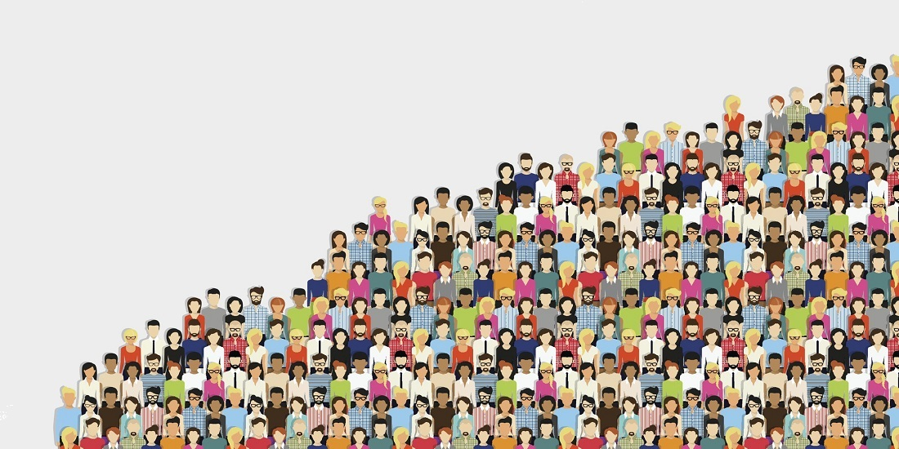

Tiltak for universal utforming.
Under finner du ulike tiltak i forhold til universal utforming. Du kan trykke "les mer" for å få mer detaljert informasjon om de ulike tiltakene.
Støtte med å lese skjermen
For blinde eller synshemmede brukere er skjermleserstøtte avgjørende for å kunne navigere på nettet. Dette betyr å sikre at nettsider er strukturert og kodet på en måte som gjør dem kompatible med skjermlesere, slik at brukerne kan få meningsfull informasjon via lyd.
Tilgjengelige nettsider og apper
Universal utforming i IT handler om å skape nettsider som er brukervennlige for alle, inkludert personer med ulike funksjonshemminger eller begrensninger. Dette innebærer å ta hensyn til ting som fargekontrast for blinde, tastatur for de som ikke kan bruke en mus eller mousepad, og alternative beskrivelser for bilder.
Adaptiv teknologi
Universal utforming inkluderer også bruk av adaptive teknologier som gjør det mulig for personer med funksjonshemminger å bruke digitale verktøy. Dette kan gjelde ulike programvarer for eksempel talegjenkjenning eller tastaturer tilpasset bruk med én hånd.
Inkludere mangfoldet av brukergrupper
I tillegg til å fikse behovene til personer med funksjonshemminger, handler universal utforming om å inkludere mangfoldige grupper med ulike evner, språk og bakgrunner. Dette kan oppnås gjennom flere språk på nettsiden, enkel navigasjon og tilgjengelig innhold for alle, selv om enkelte har reduserte datakunnskaper. 